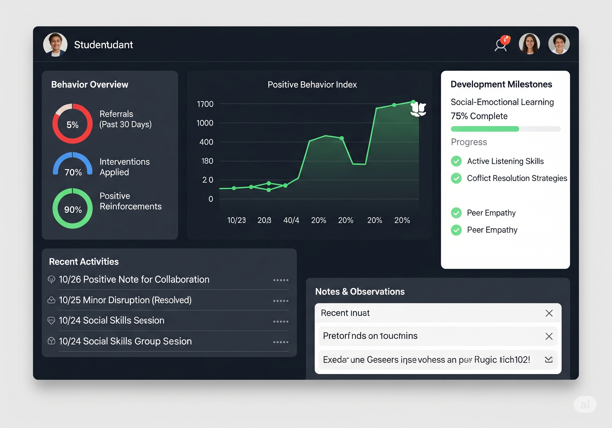
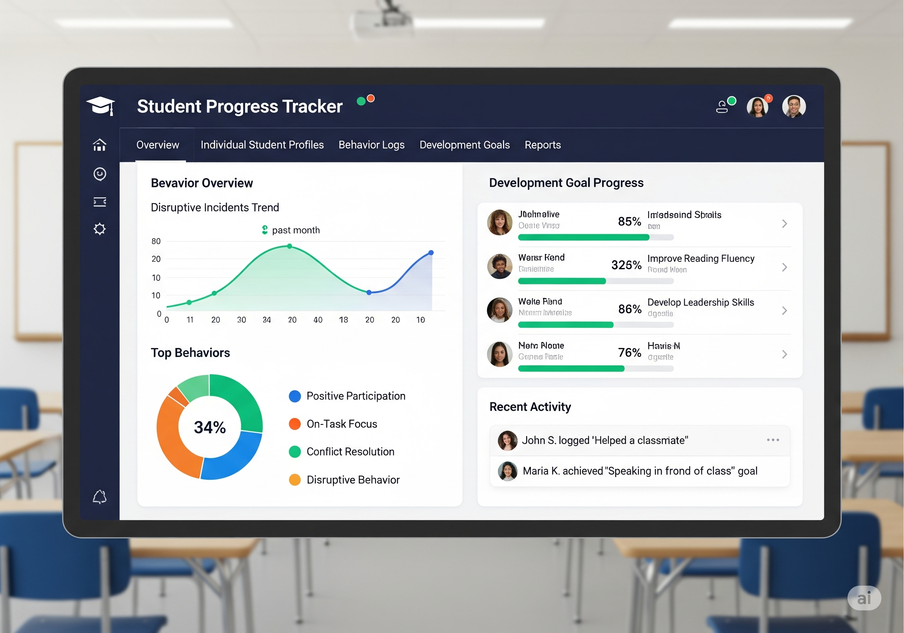
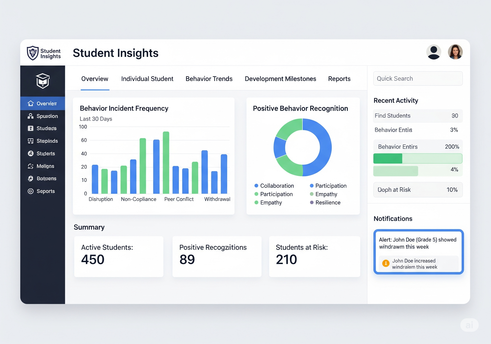

ระบบติดตามพฤติกรรมและพัฒนาการนักเรียนรายบุคคล
หลักการทำงานของระบบ ระบบนี้ทำงานโดยการรวบรวมและวิเคราะห์ข้อมูลจากแหล่งต่างๆ เพื่อสร้างโปรไฟล์การเรียนรู้และพฤติกรรมของนักเรียนแต่ละคน ข้อมูลพฤติกรรม พฤติกรรมในห้องเรียน เช่น การมีส่วนร่วม การตั้งใจเรียน การปฏิสัมพันธ์กับเพื่อน รวมถึงพฤติกรรมเชิงลบ เช่น การรบกวน การขาดสมาธิ หรือการทะเลาะวิวาท ข้อมูลด้านวิชาการ ผลการเรียน คะแนนสอบ การบ้าน และความก้าวหน้าในแต่ละรายวิชา ข้อมูลด้านพัฒนาการ ทักษะทางสังคมและอารมณ์ (Social-Emotional Skills) การแก้ปัญหา ความคิดสร้างสรรค์ และความสนใจพิเศษ ข้อมูลจากผู้เกี่ยวข้อง ข้อสังเกตจากครูประจำชั้น ครูที่ปรึกษา ครูผู้สอนวิชาอื่นๆ ผู้ปกครอง และตัวนักเรียนเอง


